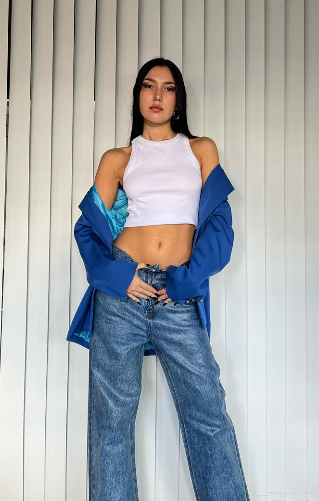

CONTENIDO
En este servicio generamos contenido orgánico especialmente para historias de Instagram y Tik Tok.
El servicio se presupuestará en base a la cantidad de looks que se tienen que armar, si es en interiores o exteriores y la cantidad de modelos que se precisan. Suele ser un servicio en donde no se contrata fotógrafo ya que se realiza con la cámara del celular.